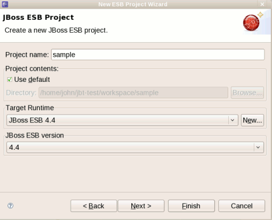
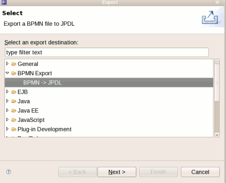

There is now a ESB project Wizard which creates a project that can be deployed as an .esb archive to a JBoss AS based server with JBoss ESB installed.

BPMN
BPMN to jPDL Export Wizard
We added an export wizard for translating BPMN files created by Eclipse STP BPMN editor to jPDL that can be executed with the JBoss jBPM process engine.

The wizard can be activated from the File > Export menu.